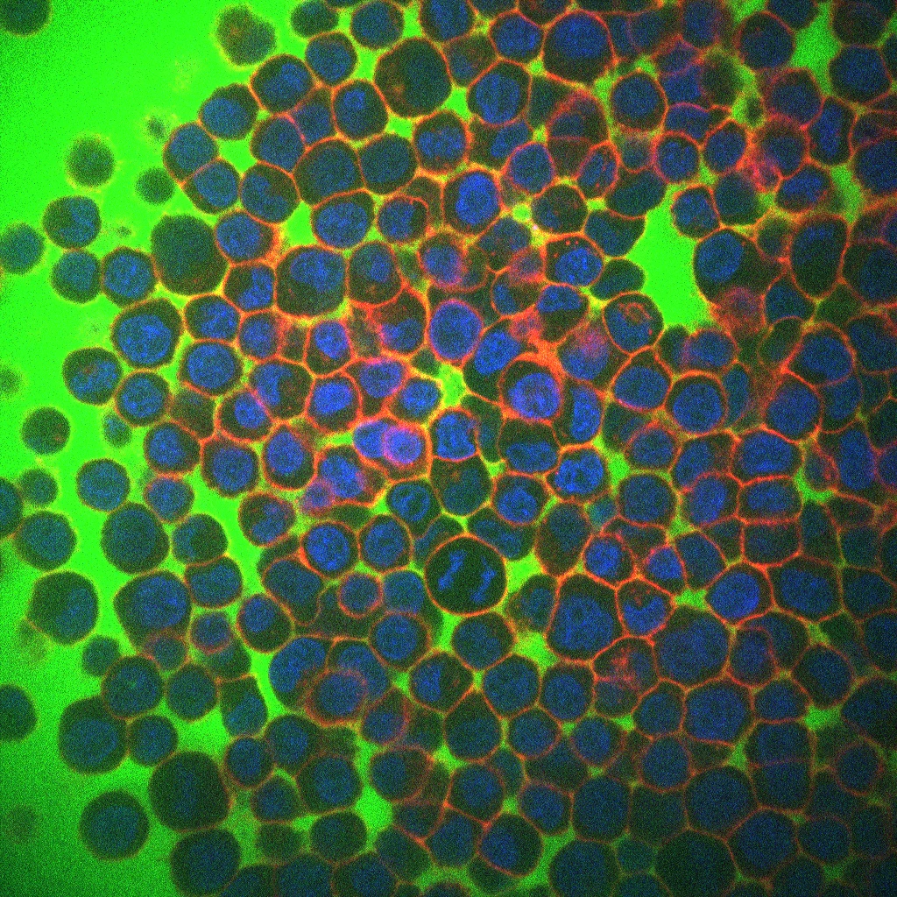
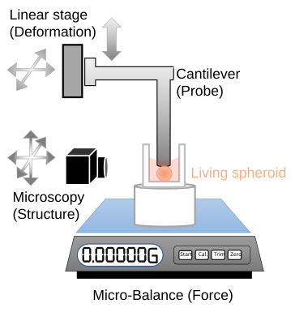

Fan Liu, Ph.D. · Mechanical Engineering · MIT
Mechanics &
fluid transport
in living tissues
I develop instruments and physical models to measure and explain how living tissues respond to forces.
Postdoctoral Associate · Massachusetts Institute of Technology
Research
Three connected directions

Mechanics & transport
Understand how fluid movement governs tissue behavior

Measurement & control
Build quantitative tools to probe and manipulate living systems

Biological function
Connect physical changes to function in engineered tissue models
Featured publication · 2025
Intercellular flow dominates the poroelasticity of multicellular tissues
Nature Physics 21, 1311–1318